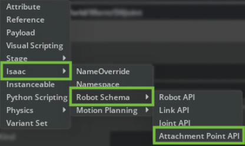
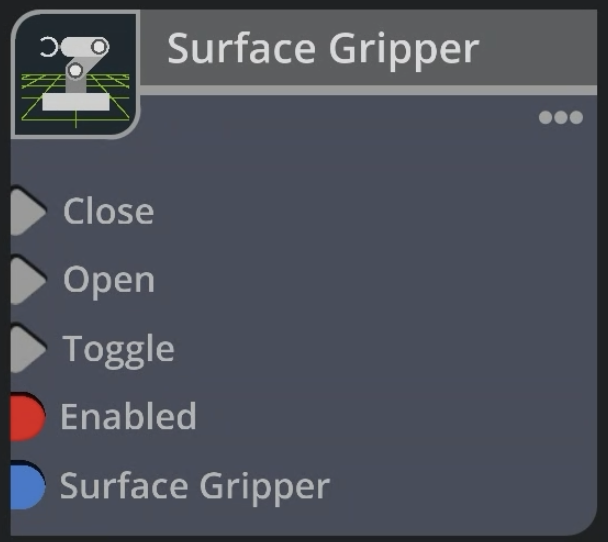
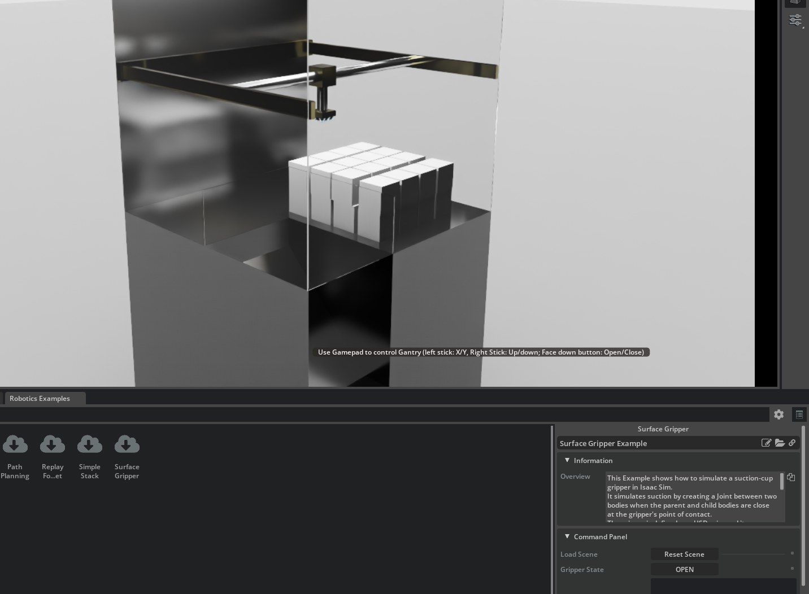
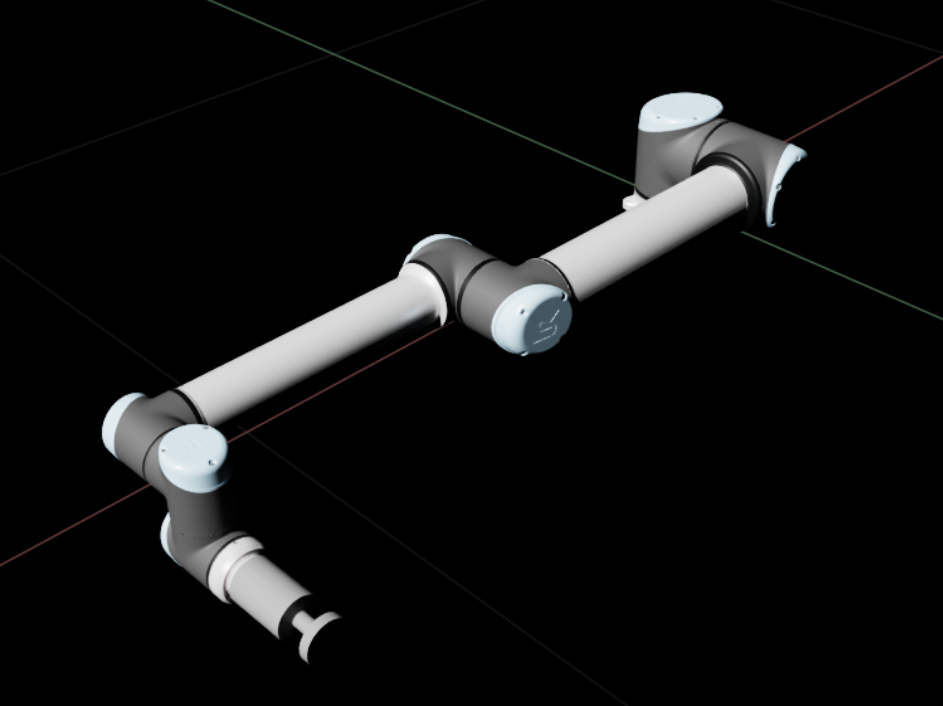
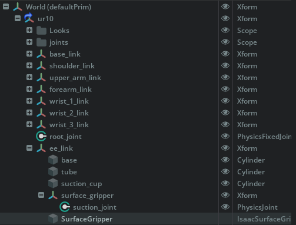
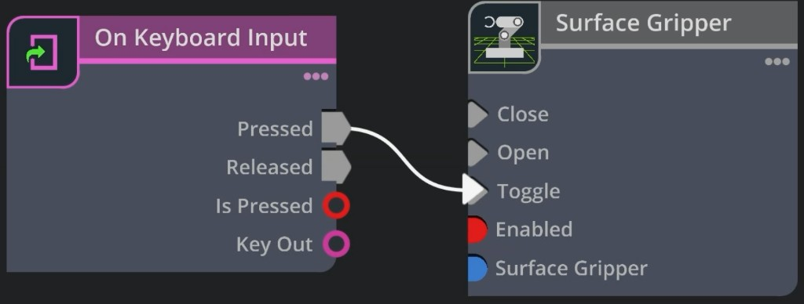
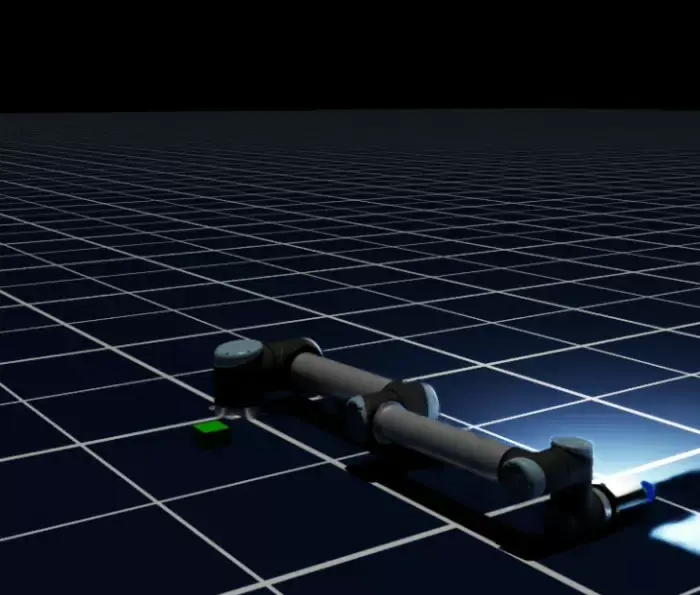
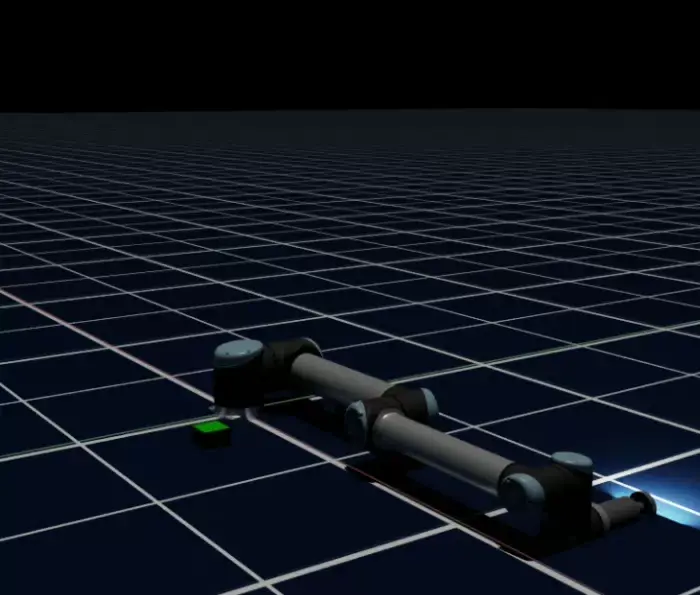

Surface Gripper Extension#
About#
Surface Gripper Extension은 엔드이펙터에 흡착컵 스타일 그리퍼를 만드는 데 사용됩니다. USD Surface Gripper Schema에서 Surface Gripper 속성을 파싱하고 접촉 지점에서 부모와 자식 강체 사이의 D6 조인트 세트를 관리하는 방식으로 작동합니다.
그리퍼의 물리적 속성은 다양한 자유도에 걸친 조인트 한도, 조인트의 강성 및 감쇠와 같이 D6 조인트 내에 정의됩니다. Surface Gripper 객체는 제약 조건의 활성화를 처리하고 그립 임계값에 따라 파지된 객체를 정의합니다.
이 익스텐션은 기본적으로 활성화되어 있습니다. 비활성화된 경우 isaacsim.robot.surface_gripper와 isaacsim.robot.surface_gripper.ui를 검색하여 Extension Manager에서 다시 활성화할 수 있습니다.
GUI를 통해 surface gripper를 만들려면 메뉴 Create > Robots > Surface Gripper로 이동합니다. 이렇게 하면 스테이지에 surface gripper 프림이 만들어집니다.
API Documentation#
사용 정보는 API Documentation을 참조하세요.
Setting up a Surface Gripper#
Surface Gripper의 속성은 다음과 같습니다:
Property |
Description |
|---|---|
Attachment Points |
The list of joints that will be used to attach the gripper to the object
|
Status |
(Read-Only) The current state of the gripper
|
Gripped Objects |
(Read-Only) The list of objects that are currently grasped by the gripper
|
Max Grip Distance |
Distance from the gripper point within which closing contact is accepted
|
Retry Interval |
How long the gripper will keep attempting to close on an object
|
Shear Force Limit |
The maximum lateral force that the gripper can apply to an object before it will break the constraint
|
Coaxial Force Limit |
The maximum axial force that the gripper can apply to an object before it will break the constraint
|
Attachment Joints#
그리퍼를 객체에 부착하는 데 사용되는 조인트는 Surface Gripper Schema 내의 Attachment Points 속성으로 정의됩니다. 이것은 그리퍼를 객체에 부착하는 데 사용될 D6 조인트의 경로 목록입니다. 이 조인트는 그리퍼 접촉 지점의 USD 파일에 정의되어야 하며 D6 유형이어야 합니다. 조인트의 물리적 속성은 D6 Joint Schema에 정의되지만 조인트에 설정해야 하는 몇 가지 필수 속성이 있습니다:
조인트가 활성화되어야 합니다.
모든 조인트에 대해 Body 0은 동일해야 합니다.
조인트에 "Exclude from Articulation"이 True로 설정되어야 합니다. 설정되지 않으면 surface gripper 매니저가 런타임에 True로 설정합니다.
Attachment Point API#
Attachment Points 속성으로 정의된 조인트에는 자동으로 Attachment API가 할당됩니다. 이 API는 Surface Gripper Manager가 그리퍼를 처리하는 데 필요한 추가 속성을 조인트에 제공하는 역할을 합니다. Attachment Point API에서 다음 속성을 사용할 수 있습니다:
Clearance Offset: 조인트에서 부모 객체 표면까지의 거리를 등록합니다. surface gripper는 조인트 월드 위치에서 레이캐스트를 전송하여 작동하므로 이 오프셋이 레이캐스트 원점에 추가되어 부모 객체와의 오탐을 방지합니다. 이 오프셋이 정의되지 않으면 레이캐스트는 조인트의 월드 위치에서 시작되고 그리퍼는 처음 부모 객체 충돌체를 지울 때 오프셋을 자동으로 계산하고 저장합니다.Forward Axis: 그리퍼를 닫으려는 조인트 축을 등록합니다. 기본값은X입니다.
이 추가 속성들은 Property 탭의 Raw USD Properties 섹션에서 찾을 수 있습니다.
Adding Attachment Joint API#
attachment joint API를 추가하려면 스테이지에서 조인트를 선택합니다. 오른쪽 패널의 Properties 탭에서 + Add 버튼을 클릭하고 Isaac > Robot Schema > Attachment Point API로 이동합니다.
{kind=link}

Property 탭의 + Add > Isaac > Robot Schema > Attachment Point API.#
Note
Attachment Point API는 Surface Gripper가 생성될 때 조인트에 자동으로 적용됩니다. 수동으로 추가할 필요가 없습니다.
Omniverse OmniGraph Node#
Surface Gripper 익스텐션은 Omniverse OmniGraph를 통한 구현을 제공합니다. 사용하려면 원하는 그래프에 surface gripper 노드를 추가하고 제어할 surface gripper 프림을 선택합니다.
다음 입력을 사용할 수 있습니다:
Close: 그리퍼를 닫습니다. 그리퍼가 이미 닫혀 있으면 아무것도 하지 않습니다.
Open: 그리퍼를 엽니다. 그리퍼가 이미 열려 있으면 아무것도 하지 않습니다.
Toggle: 그리퍼를 열린 상태와 닫힌 상태 사이에서 전환합니다.
Enabled: 그리퍼를 활성화하거나 비활성화합니다.
Surface Gripper: 제어할 surface gripper 프림.
{kind=link}

그래프 에디터의 Surface Gripper 노드.#
Creating a Surface Gripper fully in code#
이 섹션에서는 코드로 완전히 surface gripper를 구현하는 방법을 설명합니다. 이것들은 Surface Gripper 예제 코드의 스니펫으로 완전하지 않습니다.
Defining the Surface Gripper Properties#
import usd.schema.isaac.robot_schema as robot_schema
from isaacsim.robot.surface_gripper import _surface_gripper as surface_gripper
gripper_prim_path = "/World/SurfaceGripper"
gripper_interface = surface_gripper.acquire_surface_gripper_interface()
# Create the Surface Gripper Prim
# Once it is created it can be saved and this doesn't need to be redone
robot_schema.CreateSurfaceGripper(stage, gripper_prim_path)
gripper_prim = stage.GetPrimAtPath(gripper_prim_path)
attachment_points_rel = gripper_prim.GetRelationship(robot_schema.Relations.ATTACHMENT_POINTS.name)
# Select the joints to the gripper
# The joints should be D6 joints defined in the usd file.
# All joint attributes can be defined as desired, except for:
# Joint Should be enabled
# Joint Type should be D6
# All Joint Parents should be the same Rigid body
# Exclude from Articulation must be checked
# No Break force/Torque should be set
# Joint drives can be used to derive the desired joint bounce/stretch behavior
# Enable/Disable the joint DoFs and limits as desired.
gripper_joints = [p.GetPath() for p in stage.GetPrimAtPath("/World/Surface_Gripper_Joints").GetChildren()]
attachment_points_rel.SetTargets(gripper_joints)
# Define the distance the joint can grasp, and at what distance from the origin of the joints it will settle
gripper_prim.GetAttribute(robot_schema.Attributes.MAX_GRIP_DISTANCE.name).Set(0.011)
# Define the Override Break limits
gripper_prim.GetAttribute(robot_schema.Attributes.COAXIAL_FORCE_LIMIT.name).Set(0.005)
gripper_prim.GetAttribute(robot_schema.Attributes.SHEAR_FORCE_LIMIT.name).Set(5)
# How long the gripper will try to close if it is open
gripper_prim.GetAttribute(robot_schema.Attributes.RETRY_INTERVAL.name).Set(1.0)
Get Gripper State#
Surface Gripper는 모든 시뮬레이션 스텝에서 업데이트되며, 상태는 인터페이스를 통해 언제든지 검색할 수 있습니다:
status = gripper_interface.get_gripper_status(gripper_prim_path)
print(status) # Open, Closed, or Closing
Controlling the Gripper#
Gripper 상태는 인터페이스의 open과 close 메서드를 통해 제어됩니다. 또는 set_gripper_action 메서드도 있는데 -1과 1 사이의 숫자 값을 받습니다. < -0.3은 그리퍼를 열고, > 0.3은 닫으며, 그 사이의 값은 무시됩니다.
gripper_interface.close_gripper(gripper_prim_path)
gripper_interface.open_gripper(gripper_prim_path)
gripper_interface.set_gripper_action(gripper_prim_path, 0.5) # Closes the gripper
gripper_interface.set_gripper_action(gripper_prim_path, -0.5) # Opens the gripper
Keeping USD Scene in Sync#
Surface Gripper 업데이트 성능을 최적화하기 위해 USD 장면 업데이트는 기본적으로 비활성화됩니다. USD writeback이 비활성화되면 Surface Gripper 프림의 Properties 패널이 자동으로 업데이트되지 않습니다. surface gripper 상태는 surface gripper 인터페이스의 get_gripper_status 메서드를 통해 여전히 검색할 수 있으며, 그리퍼가 현재 파지한 객체는 surface gripper 인터페이스의 get_gripped_objects 메서드를 통해 검색할 수 있습니다.
USD writeback은 Surface Gripper 인터페이스에서 set_write_to_usd 속성을 True로 설정하여 활성화할 수 있습니다. 이것은 모든 surface gripper 인스턴스에 대한 전역 설정입니다.
Tutorials & Examples#
Windows > Examples > Robotics Examples에서 Robotics Examples 콘텐츠 브라우저를 활성화합니다. Manipulation으로 이동하여 Surface Gripper 예제를 선택하고 Robotics Examples 콘텐츠 브라우저 오른쪽의 정보 창에서 로드 버튼을 클릭합니다. 로드 버튼을 보려면 GUI를 조정해야 할 수 있습니다.
Surface Gripper Example (gantry)#
이 예제는 갠트리에 마운트된 surface gripper를 보여주며 그리퍼로 파지할 수 있는 큐브들이 포함되어 있습니다. 이 surface gripper는 코드로 추가되고 surface gripper Omniverse OmniGraph 노드를 통해 연결됩니다.
예제를 실행하려면:
Load 버튼을 누릅니다. 장면이 재생되기 시작해야 합니다.
게임패드 축으로 또는 갠트리 조인트 목표 위치를 수동으로 편집하여 갠트리를 이동할 수 있습니다.
갠트리를 큐브나 큐브 세트 근처로 이동하고 "Open/Close" 버튼을 클릭합니다 - 버튼 레이블은 현재 그리퍼 상태를 반영합니다. 그리퍼는 게임패드의 아래쪽 페이스 버튼(예: PlayStation 컨트롤러의 X, Xbox 컨트롤러의 A)으로도 닫을 수 있습니다.
그리퍼가 큐브에 닫히려고 하고 성공하면 큐브가 그리퍼에 파지됩니다.
갠트리를 들어올립니다. 큐브는 힘이 과도하지 않으면 그리퍼에 파지된 상태로 유지되며, 과도한 경우 그리퍼 제약이 끊어질 수 있습니다.

Walkthrough#
이 안내는 UR10 로봇 팔에 간단한 흡착식 엔드이펙터를 부착하고 Surface Gripper 익스텐션을 사용하여 그리퍼를 제어하는 방법을 시연합니다. 픽앤스택 시퀀스는 differential inverse kinematics로 구동됩니다.
Learning Objectives#
이 예제에서:
간단한 기본 도형으로 만든 흡착식 엔드이펙터를 UR10에 부착합니다.
Surface Gripper를 위해 IsaacAttachmentPointAPI, 한도, 드라이브로 D6 조인트를 구성합니다.
해당 조인트를 참조하는 Attachment Points가 있는 Surface Gripper 프림을 추가합니다.
Surface Gripper를 사용하여 픽앤스택 시퀀스를 실행합니다.
Getting Started#
사전 조건
Isaac Sim의 Stage 트리와 Property 탭에 익숙하거나 Tutorial 2: Assemble a Simple Robot을 완료했어야 합니다.
Create the Surface Gripper Geometry#
File > New로 이동하여 빈 스테이지를 시작합니다.
Content Browser에서 Isaac Sim > Robots > Universal Robots > ur10을 열고
ur10.usd를 뷰포트로 드래그합니다. UR10의 이동과 회전을 0으로 설정하여 스테이지 중앙에 배치합니다.Stage 트리에서
/World/ur10을 펼치고 Xformee_link를 찾습니다. 이 링크에 그리퍼 시각 요소와 Surface Gripper를 부착하여 손목과 함께 움직이도록 합니다.
ee_link 아래에 실린더 기하학 추가
세 개의 Cylinder 프림을 사용합니다(Create > Shape > Cylinder). 각 실린더에 대해 ee_link 아래에 부모로 지정하고, 이름을 바꾸고 아래 표에 따라 Property 탭에서 Translate, Orient(도), Scale을 설정합니다.
Prim name |
Translate |
Orient (degrees) |
Scale (X, Y, Z) |
|---|---|---|---|
|
|
|
|
|
|
|
|
|
|
|
|
실린더에 재료 속성을 추가하여 더 현실적으로 보이게 할 수 있습니다.
{kind=link}

ee_link 아래에 부모로 지정된 base, tube, suction_cup가 있는 UR10.#
Create the D6 Joint and AttachmentPointAPI#
ee_link 아래에 surface_gripper라는 새 Xform을 만듭니다. 그런 다음 Create > Physics > Joints > D6를 클릭하여 suction_joint라는 D6 조인트 프림을 추가합니다. 아래에 표시된 대로 조인트 속성을 구성합니다. Exclude from Articulation을 선택해야 합니다.
D6 조인트 구성
D6 조인트는 독립적으로 구성할 수 있는 여섯 가지 자유도를 노출합니다. 흡착컵 순응성을 시뮬레이션하려면 컵이 하중 하에 처지거나 압축될 수 있도록 흡착 방향을 따라 선형 한도를 설정하고, 파지된 객체가 접촉 지점에서 구부러지거나 비틀릴 수 있도록 회전 한도를 설정할 수 있습니다. 높은 강성은 더 단단한 파지를 만들고 감쇠를 추가하면 진동을 방지합니다. 이를 통해 실제 연체 물리 없이 탄성 변형을 모델링할 수 있습니다.
이 예제에서는 각 회전 축에 약 -5~5도, Z축 한도에 0.01미터의 작은 한도를 추가하여 그리퍼 법선 축을 따른 순응성을 허용합니다. 또한 + Add > Physics > Z Axis Translation Drive를 클릭하여 Z Axis Translation Drive를 추가합니다. Stiffness를 1000으로, Damping을 100으로 설정합니다. 이 값들은 특정 애플리케이션에 맞게 조정할 수 있습니다.
suction_joint에 AttachmentPointAPI 적용
Note
AttachmentPointAPI는 Surface Gripper 프림이 생성될 때 조인트에 자동으로 적용됩니다(다음 섹션 참조). 아래는 명시적 방법입니다. 추가 세부 정보는 Adding Attachment Joint API를 참조하세요.
suction_joint를 선택합니다. Property 탭에서 + Add > Isaac > Robot Schema > Attachment Point API를 클릭하여 적용합니다.Attachment Point 아래 Property 탭에서 새 속성을 확인합니다.
Attachment Point 섹션의 Forward Axis를
Z로 설정하여 흡착 방향을 그리퍼와 정렬합니다.
Add the Surface Gripper Prim#
Surface Gripper 프림은 그리퍼의 흡착 동작을 제어하는 데 사용됩니다. UI나 Python을 통해 만들 수 있습니다. OmniGraph 노드를 사용하여 그래프에서 그리퍼를 제어할 수 있습니다.
Stage Tree에서
ee_link를 우클릭하고 Create > Isaac > Robots > Surface Gripper를 선택합니다.새 프림이
ee_link아래에 없으면ee_link아래에 부모로 지정되도록 드래그합니다.Surface Gripper 프림을 선택합니다. Max Grip Distance를
0.01로 설정합니다.Attachment Points를 이전에 만든 D6 조인트의 스테이지 경로로 설정합니다(
suction_joint).
조정이 필요할 때까지 Retry Interval, Shear Force Limit, Coaxial Force Limit를 기본값으로 두세요. 파지가 너무 쉽게 해제되거나 유지되지 않으면 해당 필드를 조정하세요(Setting up a Surface Gripper 아래의 속성 표 참조).
{kind=link}

ee_link 아래의 Stage 계층 구조: 그리퍼 실린더, surface_gripper / suction_joint, Surface Gripper 프림.#
이전 섹션을 완료한 후 Script Editor에서 다음을 실행합니다. GUI 탭을 미러링합니다: ee_link 아래에 프림을 만들고, Attachment Points를 suction_joint로 설정하고, Max Grip Distance를 0.01로 설정합니다.
# Create and configure a Surface Gripper prim under ee_link (same outcome as the GUI tab).
# Run with the Isaac Sim stage loaded; paths must match your robot and suction_joint from the walkthrough.
import omni.usd
import usd.schema.isaac.robot_schema as robot_schema
from isaacsim.robot.surface_gripper import create_surface_gripper
from pxr import Sdf
stage = omni.usd.get_context().get_stage()
# Parent Xform for the tool (same as in the walkthrough when the robot lives under /World/ur10).
ee_link_path = "/World/ur10/ee_link"
# D6 joint configured earlier under surface_gripper (see walkthrough).
suction_joint_path = f"{ee_link_path}/surface_gripper/suction_joint"
# Create a SurfaceGripper prim under ee_link using the convenience function.
gripper_prim = create_surface_gripper(stage, ee_link_path)
# **Attachment Points** → suction_joint
attachment_points_rel = gripper_prim.GetRelationship(robot_schema.Relations.ATTACHMENT_POINTS.name)
attachment_points_rel.SetTargets([Sdf.Path(suction_joint_path)])
# **Max Grip Distance** = 0.01 (defaults for retry / force limits match the GUI until you tune them)
gripper_prim.GetAttribute(robot_schema.Attributes.MAX_GRIP_DISTANCE.name).Set(0.01)
create_surface_gripper는 Create > Isaac > Robots > Surface Gripper를 선택할 때 UI가 사용하는 동일한 함수입니다. SurfaceGripper 또는 SurfaceGripper_01과 같은 사용 가능한 프림 이름을 선택합니다. 더 낮은 수준의 제어를 위해 robot_schema.CreateSurfaceGripper를 직접 호출하세요 — Creating a Surface Gripper fully in code를 참조하세요.
GUI 또는 Code 탭을 먼저 완료했는지 확인하세요. Surface Gripper는 OmniGraph에서 만들 수 없지만 그래프 내의 로직으로 제어할 수 있습니다. 아래에서 볼 수 있듯이 Surface Gripper 노드를 사용하여 그리퍼를 열린 상태와 닫힌 상태 사이에서 전환하고 그리퍼를 완전히 활성화/비활성화할 수 있습니다.
Window > Graph Editors > Action Graph를 열고 New Action Graph를 선택합니다.
그래프 검색 필드에서 Surface Gripper를 찾아 그래프에 추가합니다.
Surface Gripper 노드를 선택합니다. 속성 패널에서 SurfaceGripper 대상을 이전에 만든 프림 경로로 설정합니다. 예를 들어
/World/ur10/ee_link/SurfaceGripper.키보드에서 Toggle을 구동하려면 On Keyboard Input 노드를 추가합니다. Property 탭에서 볼 수 있듯이 A는 물리 시뮬레이션이 재생 중일 때 그리퍼를 토글하는 데 사용할 수 있는 기본 키입니다. 아래 스택 예제를 실행할 때 이것을 시험해 보세요.

Surface Gripper 노드. Omniverse OmniGraph Node도 참조하세요.#
Save the customized robot#
스택 데모는 /World/robot에서 USD를 참조하므로 로봇은 USD의 Default Prim이어야 하고 파일의 루트에 있어야 합니다 — /World 범위 아래에 중첩되어서는 안 됩니다.
Stage 트리에서
/World/ur10을 루트로 드래그하여/ur10이 되도록 합니다./ur10을 우클릭하고 Set as Default Prim을 선택합니다.이제 비어 있는
/World와/EnvironmentXform을 삭제합니다.스테이지를 USD 파일로 저장합니다.
Run the Demo#
패키지된 UR10으로 실행
Isaac Sim에는 Surface Gripper 프림과 그리퍼를 제어하는 데 필요한 조인트가 포함된 UR10 USD 파일이 패키지되어 있습니다. 여기서 패키지된 UR10으로 작동하는 픽앤스택 시퀀스를 시연합니다. 예제는 Surface Gripper를 사용하여 두 개의 큐브를 들어올리고 쌓습니다.
python.sh가 있는 Isaac Sim 설치 폴더에서 실행합니다:
./python.sh standalone_examples/api/isaacsim.robot.experimental.manipulators/universal_robots/stacking.py
파일을 대체하기 전에 스크립트와 픽앤스택 시퀀스를 확인할 수 있도록 재고 UR10 USD를 사용합니다.
{kind=link}

원본 패키지된 UR10을 사용한 픽앤스택.#
저장한 USD로 실행
이전에 저장한 USD 파일을 --usd-path 인수로 전달합니다:
./python.sh standalone_examples/api/isaacsim.robot.experimental.manipulators/universal_robots/stacking.py --usd-path /path/to/your/ur10_custom.usd
USD의 실제 경로를 사용하세요. 샘플은 이 안내의 Surface Gripper와 조인트 레이아웃을 기대합니다. 프림 경로나 아티큘레이션 루트가 기본값과 다르면 스크립트를 일치하도록 업데이트하세요.
{kind=link}

사용자 정의 실린더 그리퍼와 Surface Gripper 설정을 사용한 동일한 데모.#